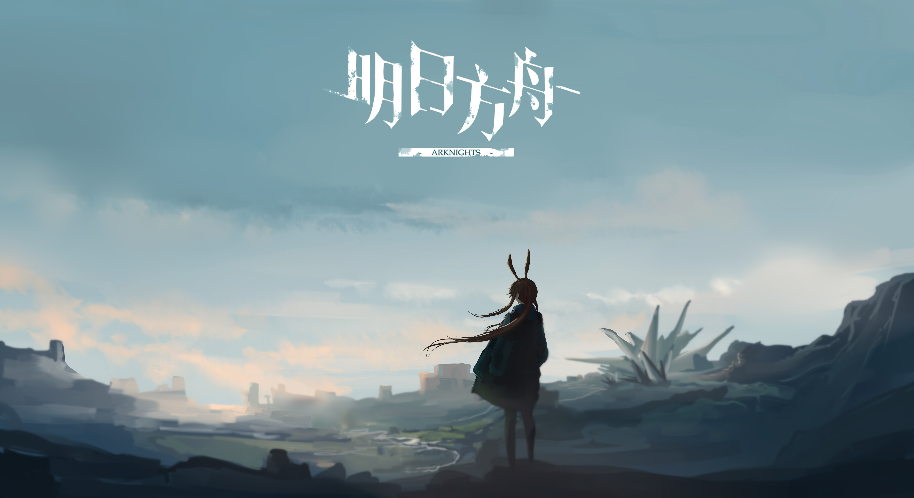
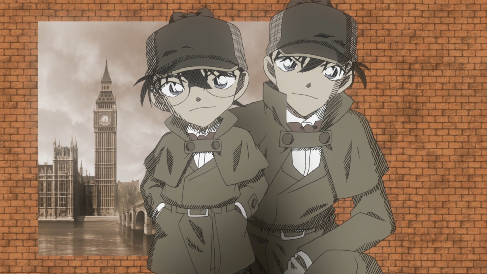

Ajin

La trama ruota attorno a Kei Nagai, un ragazzo che, dopo un incidente apparentemente mortale, scopre di essere diventato un "Ajin", un essere immortale con incredibili abilità rigenerative. Ma la sua nuova vita si trasforma rapidamente in una lotta per la sopravvivenza quando il governo decide di cacciare e sperimentare sugli Ajin. Lo si può trovare su Netflix, nel caso non si possieda un account lasci qui sotto i link per vederlo, esiste anche il manga che prende una piega differente.
Arknights

Detective Conan

Shinichi Kudo è un abile investigatore adolescente, intrappolato in un corpo di bambino. Insieme ai suoi amici Shinichi fonda la squadra dei Detective Boys, impegnati a risolvere difficili casi criminali.
Violet Evergarden